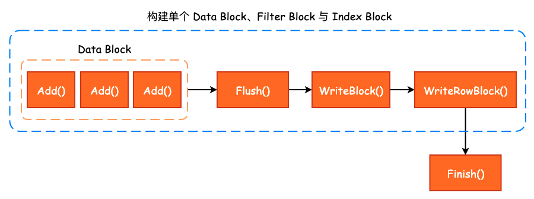
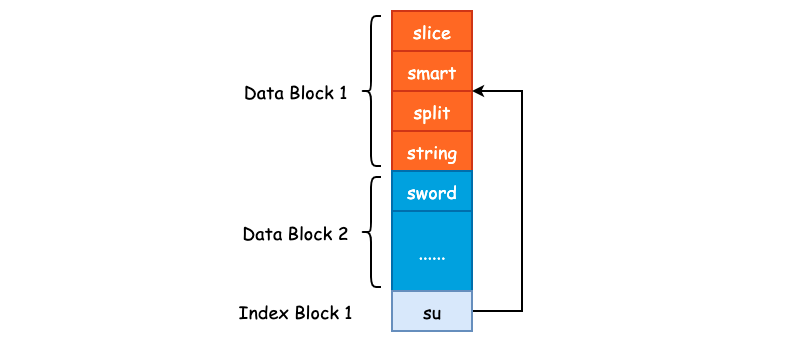

SSTable—Table Builder
在前面我们已经完成了 Data Block、Filter Block 以及 Metaindex Block、Index Block 的构建过程梳理，那么最后需要做的事情就是将这些构建过程串联起来，得到一个完成的 SSTable。
1. Table Builder
和 BlockBuilder、FilterBlockBuilder 的命名方式一样，构建 SSTable 的类名称叫做 TableBuilder，其内部将 BlockBuilder、FilterBlockBuilder 等内容组合起来，以构建 SSTable。
class LEVELDB_EXPORT TableBuilder {
public:
/* WritableFile 通常为 PosixWritableFile */
TableBuilder(const Options& options, WritableFile* file);
/* 向 TableBuilder 中添加 Key-Value，这里的 Key 同样为 InternalKey */
void Add(const Slice& key, const Slice& value);
/* 将缓冲区中的数据 flush 到文件中，由 leveldb 内部调用 */
void Flush();
Status status() const;
/* 结束 Table 的构建 */
Status Finish();
/* 放弃 Table 的构建 */
void Abandon();
/* 一共添加了多少 Key-Value 对 */
uint64_t NumEntries() const;
private:
bool ok() const { return status().ok(); }
/* 序列化需要写入的 Data Block */
void WriteBlock(BlockBuilder* block, BlockHandle* handle);
/* 将压缩后的数据写入文件中 */
void WriteRawBlock(const Slice& data, CompressionType, BlockHandle* handle);
/* Rep 的作用就是隐藏具体实现 */
struct Rep;
Rep* rep_;
};
TableBuilder 对外提供的接口非常简洁，主要就是 Add()、Flush() 以及 Finish 这三个方法的调用，并且从名称上来看我们也能够大致地猜测出方法的功能。 在 TableBuilder 中只有唯一的一个成员变量 rep_，其类型为 Rep *。Rep_ 这个结构体的作用就是做了另一层的封装，能够让 TableBuilder 这个类更清爽一些:
struct TableBuilder::Rep {
Options options; /* Data Block Options */
Options index_block_options; /* Index Block Options */
WritableFile* file; /* 抽象类，决定了如何进行文件的写入，PosixWritableFile */
uint64_t offset; /* Data Block 在 SSTable 中的文件偏移量 */
Status status; /* 操作状态 */
BlockBuilder data_block; /* 构建 Data Block 所需的 BlockBuilder */
BlockBuilder index_block; /* 构建 Index Block 所需的 BlockBuilder */
std::string last_key; /* 当前 Data Block 的最后一个写入 key */
int64_t num_entries; /* 当前 Data Block 的写入数量 */
bool closed; /* 构建过程是否结束 */
FilterBlockBuilder* filter_block; /* 构建 Filter Block 所需的 BlockBuilder */
bool pending_index_entry; /* pending_index_entry 用于 Add() 方法中 */
BlockHandle pending_handle; // Handle to add to index block
std::string compressed_output; /* 压缩之后的 Data Block */
};
TableBuilder 中各个方法的调用关系如下图所示:

2. TableBuilder::Add()
在实际地向 Data Block 和 Filter Block 添加数据之前，需要进行基本的逻辑判断，比如说当前 Build 过程是否结束，也就是是否已经调用了 Finish() 或者是 Abandon() 方法。另一点就是需要保证当前添加的 Key 一定是大于 last_key 的，保证 Data Block 的有序性:
void TableBuilder::Add(const Slice& key, const Slice& value) {
Rep* r = rep_;
assert(!r->closed); /* 判断当前 Build 过程是否结束 */
if (!ok()) return;
if (r->num_entries > 0) {
/* 判断当前 key 是否大于 last_key */
assert(r->options.comparator->Compare(key, Slice(r->last_key)) > 0);
}
}
紧接着，就是对 pending_index_entry 进行判断。pending_index_entry 是一个布尔型的标志位，用于表示是否到了生成 Index Block 的时机，如果 pending_index_entry 为 true 的话，那么就去生成 Index Block，否则继续构建 Data Block 和 Filter Block。那么 pending_index_entry 什么时候为 true 呢？答案就是在写完一个 Data Block 之后:
/* Data Block 的默认大小为 4KB */
if (estimated_block_size >= r->options.block_size) {
/* Flush() 方法内部将会把 pending_index_entry 置为 True */
Flush();
}
也就是说，当 Add() 方法在写入下一个 Data Block 的第一个 Key-Value 对时，才会为上一个 Data Block 构建 Index Block，这一点作者在原注释中已经解释了。其根本目的就是使用更短的 Key 来作为 Index Block 的 Key。比如说上一个 Data Block 的数据为 ["smart", "split", "slice", "string"]，排序后得到 ['slice', 'smart', 'split', 'string']。因此，"string" 就是上一个 Data Block 的结束边界，如果说当前 Data Block 的起始边界为 "sword" 的话，那么就可以使用 "su" 来作为上一个 Data Block 的 Index Block Key。因为 "su" 大于 "string"，并且小于 "sword"。这么做并不会影响搜索，同时节省了磁盘存储空间，一个非常巧妙的设计。
/* 在构建下一个 Data Block 之前，将 Index Block 构建出来 */
if (r->pending_index_entry) {
/* 当前 Data Block 必然为空 */
assert(r->data_block.empty());
/* 通过 last_key 和 当前 key 计算得到一个 X，使得 last_entry <= X < key */
r->options.comparator->FindShortestSeparator(&r->last_key, key);
std::string handle_encoding;
r->pending_handle.EncodeTo(&handle_encoding);
/* 向 Index Block 中添加上一个 Data Block 的 Index */
r->index_block.Add(r->last_key, Slice(handle_encoding));
/* 上一个 Data Block 的 Index Block 已经写完，故更新 pending_index_entry 为 false */
r->pending_index_entry = false;
}

我们可以在 InternalKeyComparator::FindShortestSeparator() 这个方法中去检验当我们传入不同的 last_key 和 key 得到的 Index Block Key 是否是满足基本要求的。
不管是否需要写入 Index Block，Data Block 和 Filter Block 都是需要写入的，那么 Add() 方法下面的流程就是调用 FilterBlockBuilder 和 BlockBuilder 的相关方法写入 Internal Key 和 User Value:
/* 若指定了 FilterPolicy，那么就会写入 Filter Block */
if (r->filter_block != nullptr) {
r->filter_block->AddKey(key);
}
/* 更新 last_key */
r->last_key.assign(key.data(), key.size());
/* 更新 Key-Value 写入数量 */
r->num_entries++;
/* 将数据添加至 Data Block 中 */
r->data_block.Add(key, value);
最后，如果当前 Data Block 的预估大小（未进行压缩之前的大小）超过了 Options.block_size 阈值的话，那么就会调用 Flush() 方法结束当前 Block 的构建:
/* Data Block 的默认大小为 4KB */
const size_t estimated_block_size = r->data_block.CurrentSizeEstimate();
if (estimated_block_size >= r->options.block_size) {
/* 结束当前 Block 的构建，Flush() 方法内部将会把 pending_index_entry 置为 True */
Flush();
}
3. TableBuilder::Flush()
Flush() 方法结束当前 Data Block 的构建，其调用时机我们在 Add() 方法中已经分析过了，即当 Data Block 的预估大小超过了 Options.block_size 时，将会调用 Fulsh() 方法。在该方法内部，将会对 Data Block 进行压缩，leveldb 默认使用 snappy 压缩方法，同样是 Google 的开源项目: snappy:
void TableBuilder::Flush() {
Rep* r = rep_;
assert(!r->closed);
if (!ok()) return;
if (r->data_block.empty()) return;
assert(!r->pending_index_entry);
/* 对 Data Block 进行压缩，并生成 Block Handle */
WriteBlock(&r->data_block, &r->pending_handle);
if (ok()) {
/* 设置 pending_index_entry 为 true，下一次写入 Data Block 时，需构建 Index Block */
r->pending_index_entry = true;
/* 将数据写入至内核缓冲区 */
r->status = r->file->Flush();
}
if (r->filter_block != nullptr) {
/* 创建一个新的 Filter Block */
r->filter_block->StartBlock(r->offset);
}
}
Flush() 方法本身比较简单，最为核心的调用为 WriteBlock()，这也是 TableBuilder 的私有方法之一，和 WriteRawBlock() 搭配使用。
4. TableBuilder::WriteBlock() 与 TableBuilder::WriteRawBlock()
在 WriteBlock() 方法中，主要对 Data Block 进行 snappy 压缩，同时，如果压缩率低于 12.5% 的话，将不会使用 snappy 压缩，直接存储原数据:
void TableBuilder::WriteBlock(BlockBuilder* block, BlockHandle* handle) {
Rep* r = rep_;
/* 获取 Data Block 的全部数据 */
Slice raw = block->Finish();
Slice block_contents;
/* 默认压缩方式为 kSnappyCompression */
CompressionType type = r->options.compression;
switch (type) {
case kNoCompression:
block_contents = raw;
break;
case kSnappyCompression: {
std::string* compressed = &r->compressed_output;
/* 进行 snappy 压缩，并且只有在压缩率大于 12.5 时才会选用压缩结果 */
if (port::Snappy_Compress(raw.data(), raw.size(), compressed) &&
compressed->size() < raw.size() - (raw.size() / 8u)) {
block_contents = *compressed;
} else {
/* 未配置压缩算法，或者是使用 snappy 压缩时压缩率低于 12.5% */
block_contents = raw;
type = kNoCompression;
}
break;
}
}
/* 将处理后的 block contents、压缩类型以及 block handle 写入到文件中 */
WriteRawBlock(block_contents, type, handle);
/* 清空临时存储 buffer */
r->compressed_output.clear();
/* 清空 Data Block */
block->Reset();
}
5. TableBuilder::Finish()
最后再来看 Finish() 方法，该方法表示已经将所有的 Key-Value 添加至 SSTable 中，并进行一些收尾工作，例如写入 Metaindex Block，Footer 等。整个 Finish() 方法的逻辑非常清晰，大体上可以分为 5 个部分:
首先调用 TableBuilder::Flush() 方法将最后一个 Data Block 写入，由于最后一个 Data Block 可能只有少数几个 Key-Value，无法自行触发 Flush() 方法的调用，因此需要主动地再次调用:
Rep* r = rep_;
/* 将最后一个 Data Block 写入 */
Flush();
assert(!r->closed);
/* 更新关闭标志位为 true */
r->closed = true;
紧接着，将 Filter Block 写入:
// Write filter block
if (ok() && r->filter_block != nullptr) {
WriteRawBlock(r->filter_block->Finish(), kNoCompression,
&filter_block_handle);
}
然后，写入 Metaindex Block，并添加 "filter.leveldb.BuiltinBloomFilter2" 到 Metaindex Block 中，以快速定位 Filter Data:
if (ok()) {
BlockBuilder meta_index_block(&r->options);
if (r->filter_block != nullptr) {
std::string key = "filter.";
/* 若使用 Bloom Filter，key 的值为 filter.leveldb.BuiltinBloomFilter2 */
key.append(r->options.filter_policy->Name());
std::string handle_encoding;
filter_block_handle.EncodeTo(&handle_encoding);
meta_index_block.Add(key, handle_encoding);
}
/* 写入 Metaindex Block */
WriteBlock(&meta_index_block, &metaindex_block_handle);
}
最后，将 Index Block 和 Footer 写入即可，整个 SSTable 的构建过程也就结束了。